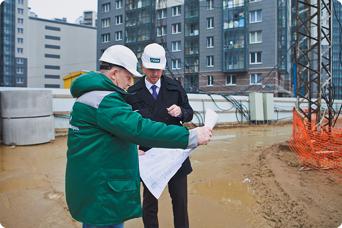

2019 год
ОБСЛЕДОВАНИЕ СТРОИТЕЛЬНЫХ КОНСТРУКЦИЙ ПОСЛЕ НЕПРОЕКТНЫХ ВОЗДЕЙСТВИЙ

Оценка потери прочности (работоспособности) строительных конструкций от непроектных воздействий выполняется после пожаров, взрывов, землетрясений и других внешних воздействий, способных вызвать изменения в работе строительных конструкций, эксцентриситеты и изменение физических свойств примененных строительных материалов.
Обследование зданий и сооружений после пожара и других воздействий, не предусмотренных нормальной эксплуатацией, обязательно должно включать:
- Лабораторные испытания материалов строительных конструкций в зоне воздействия;
- Геодезические измерения строительных конструкций, выявление отклонений от вертикальности, горизонтальности;
- Обследование мест опирания строительных конструкций;
- Конструкторские расчеты на основании фактически определенных данных;
- Заключение с обоснованием выдачи рекомендаций о необходимости мониторинга определенных участков или здания в целом, необходимых усилениях или замене строительных конструкций и др.